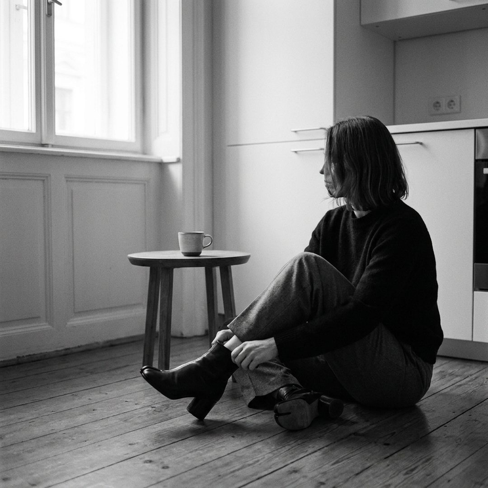
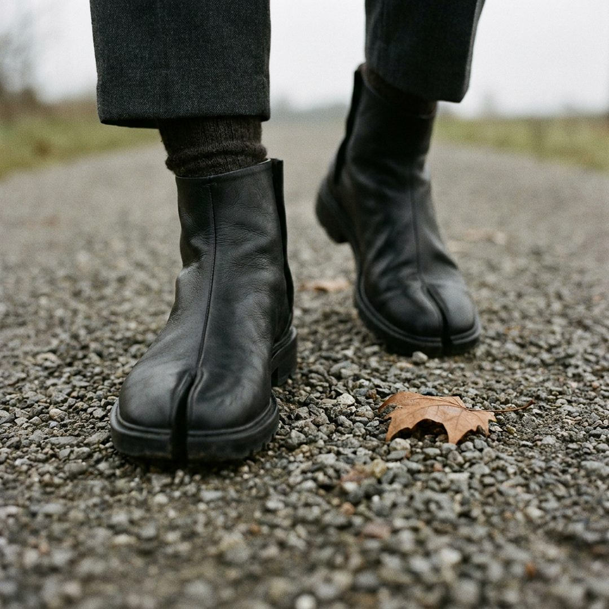
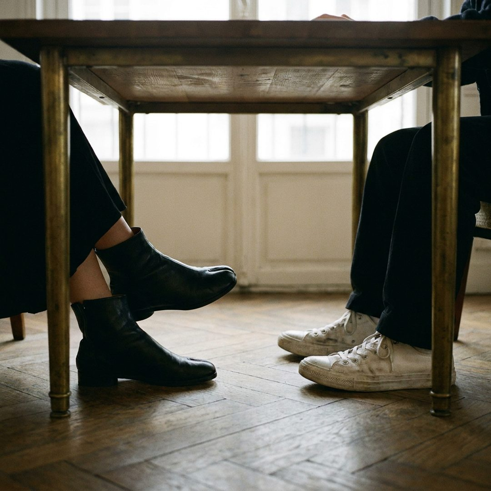
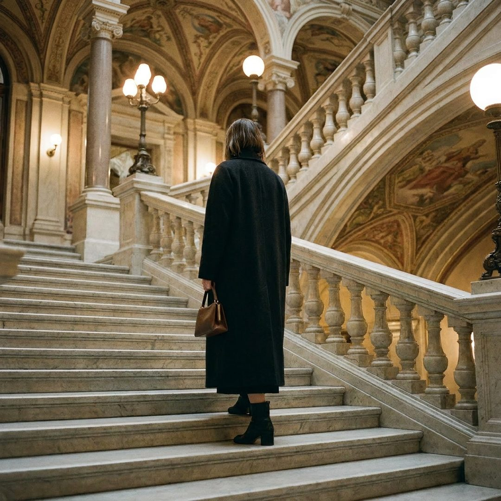
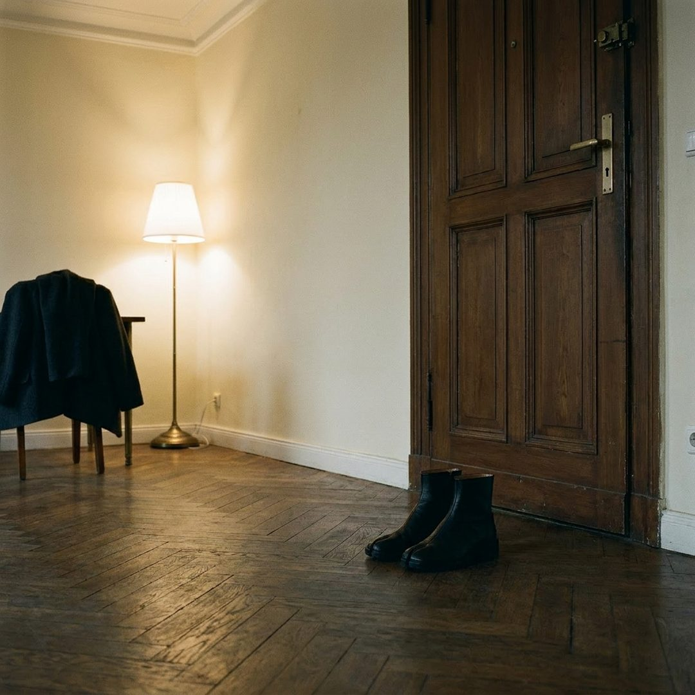

A day with
Object N°03.
Анна, архитектор, провела один день с парой Tabi 2010 года переиздания. Каждые несколько часов она документировала, что объект делает с восприятием времени, тела и пространства.
Перед светом
Я надеваю их перед тем, как выйти к свету. Кожа ещё хранит тепло ночной комнаты. Сначала кажется странным разделение: один палец отдельно. Через пять минут - естественным.

Гравий и мох
Гравий ощущается через подошву иначе. Я начинаю замечать, какая поверхность подо мной. Раздвоение пальцев напоминает, что у меня есть стопа - а не просто ботинок.

Под столом
Сижу. Под столом видны только мои стопы. Девушка напротив смотрит и спрашивает, не неудобно ли. «Они помнят, что у вас две ноги, две руки, два больших пальца.»

Лестница
Подъём по лестнице - другой ритм. Передняя половина стопы работает как пружина. Я не думаю об этом обычно. Сегодня - думаю.

Тишина
Снимаю их. Кожа потеплела от меня, не от воздуха. Завтра они будут уже немного моими. Это и есть архив - не вещь, а след, который мы оставляем на ней.
